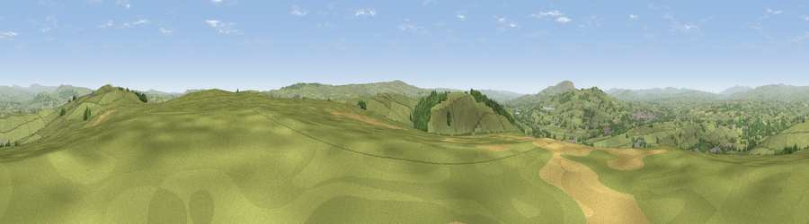

Viewpoint near Earby
#8900 in England · top 10% of its area beats it · near EarbyThe view, rendered

A 360° render of this exact spot computed from the terrain model, tree cover and land cover — summer colours, afternoon light, calibrated against photographs of famous viewpoints. Real trees, hedges and buildings will differ in detail.
The panorama
Grey silhouette: terrain skyline in each direction (720 bearings, Earth curvature and refraction included). Dashed green: skyline with trees (+15 m) and buildings (+8 m) as obstacles. Blue strip: how far the ground is visible on each bearing.
Where the view opens
Wedge length = distance to the farthest visible ground on that bearing (vegetation-aware). Rings at 10, 25 and 50 km.
What fills the view
86% grassland · 10% woodland · 2% built-up · 2% cropland
Angular shares of the visible panorama (visual magnitude), not map area. Landscape diversity 0.22 (0–1 Shannon).
Key numbers
More beautiful places nearby
The staircase of upgrades: each row has a higher view potential than everything closer. Driving times are estimates from straight-line distance, calibrated against real road routing — check an actual route before setting out.
| Place | Direction | Drive | Score |
|---|---|---|---|
| Viewpoint near Lothersdale | NE · 2 km | ~4 min | 65.5 |
| Viewpoint near Lothersdale | NE · 3 km | ~7 min | 70.5 |
| Lad Law (Boulsworth Hill) | S · 10 km | ~19 min | 71.5 |
| Sharp Haw | NNE · 11 km | ~20 min | 72.7 |
| Viewpoint near Embsay | NNE · 12 km | ~23 min | 74.5 |
| Viewpoint near Barley | WSW · 12 km | ~23 min | 76.3 |
| Pendle Hill | WSW · 13 km | ~23 min | 76.5 |
| Viewpoint near Bewerley | NE · 28 km | ~44 min | 76.8 |
53.90470, -2.11678 · source: screening · position refined by local search. Computed location — check access rights before visiting.